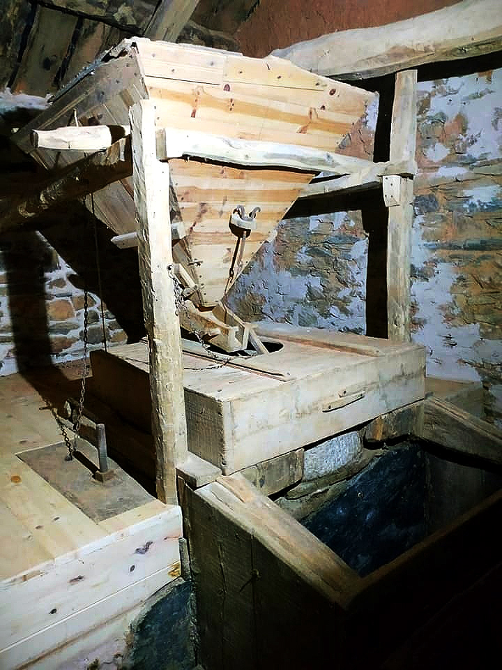

Molinos de Viforcos
Un recorrido por el pasado de Viforcos a través de sus antiguos molinos, el agua y la vida en comunidad.
Ver vídeo de los molinosUn pasado ligado al agua y al trabajo colectivo
A Viforcos se le atribuye un pasado minero y arriero, aunque se cree que más que labores concretamente mineras, en Viforcos se realizaron tareas de captación de aguas, como demuestran incluso en el cordal de Foncebadón a Veldedo y Manzanal, con el topónimo y los restos aún existentes de la Fuente de la Barreda.
En el Catastro del Marqués de la Ensenada se mencionan trece molinos harineros. Cada molino era de una rueda y solo molía durante los cuatro meses de invierno, ya que el resto del año no trabajaba por falta de agua.
Captación de agua
El agua fue clave en la vida y el funcionamiento de los molinos de Viforcos.
Trece molinos
En documentos históricos se mencionan hasta trece molinos harineros en la zona.
Trabajo vecinal
La conservación recaía en los vecinos, que colaboraban cada año en la hacendera.
Patrimonio vivo
Gracias a su restauración hoy podemos revivir cómo funcionaban siglos atrás.
Restos, entorno y memoria de los molinos
Una pequeña muestra del entorno y de las huellas que aún conservan estas joyas del pasado.



Revive los molinos de Viforcos
La mayoría de ellos hoy están en ruina, pero todavía se pueden encontrar vestigios de muchos de ellos: Cimeros, Galleguín, Las Flores, Tío Isidro, El Fontanal, El Cubo, La Peña, Los González, Canal de arriba, Canal de abajo, Canalina, Los Abedules y Las Carrozas. Gracias a la restauración de algunos molinos, hoy podemos descubrir los sonidos, los olores y el tacto que experimentaban siglos atrás.
Ver vídeo completo